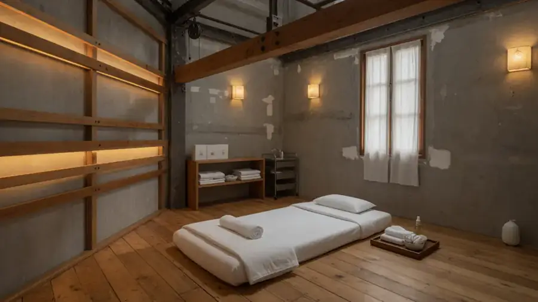
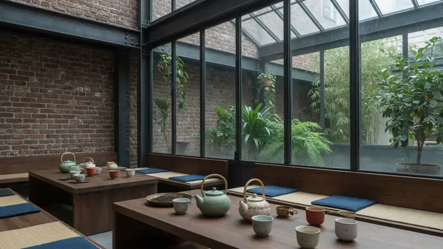
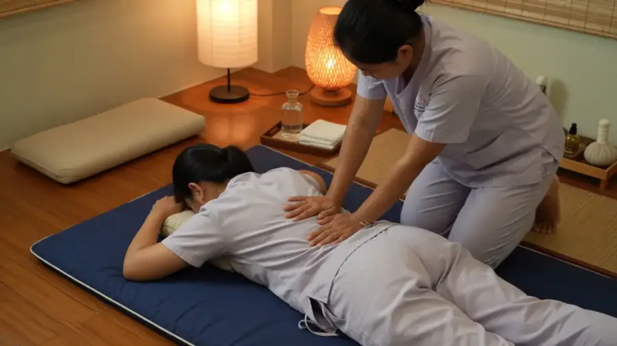

Kanya Ratanaporn — fondatrice
19 ans de pratique · Wat Pho (Bangkok)
Elle a conçu l’organisation des soins et le lien entre cabines et Clairière à l’ouverture de 2021.
Projet fictif — démonstration Studio Brontès. Établissement, adresse, téléphone, horaires et réservations sont inventés. Aucune demande n’est transmise.
Lieu · équipe
Imprimerie Delaunay (1911), 2 000 m² sur trois niveaux. Une lignée technique nommée, des praticiens formés.
Suan Nai occupe une ancienne imprimerie du 11ᵉ arrondissement : 2 000 m² sur trois niveaux. Pierre, acier, verrière. La structure d’origine n’a pas été effacée : elle porte La Clairière au centre et les cabines en périphérie.
Maison ouverte en 2021.

Accueil, vestiaires et casiers, salon de thé, accès principal à La Clairière.
Cabines de soin, circulation amortie, lumière contrôlée.
Cabines supplémentaires, espaces d’équipe, vue partielle sur la canopée sous verrière.



Formation
La référence de formation de la maison est l’école de médecine traditionnelle du Wat Pho, Bangkok. Une partie de l’équipe est également passée par l’ITM de Chiang Mai. Les protocoles nommés sur la carte — Nuad Boran, Luk Pra Kob, réflexologie thaïe — viennent de cette lignée technique.
Aucun logo d’école, aucun endorsement ni partenariat réel n’est revendiqué. Noms, parcours et diplômes sont fictifs.
19 ans de pratique · Wat Pho (Bangkok)
Elle a conçu l’organisation des soins et le lien entre cabines et Clairière à l’ouverture de 2021.

22 ans de pratique · Nuad Boran
Supervise les protocoles, la montée en compétence des 24 praticiens et la cohérence des pressions et drapages.
L’équipe : 24 praticiens, tous formés au Wat Pho ou à l’ITM de Chiang Mai. Hommes et femmes. Chaque séance est assurée par un·e praticien·ne nommé·e à l’accueil (dans le fonctionnement illustré de la maison).
Détail complet sur l’accueil.